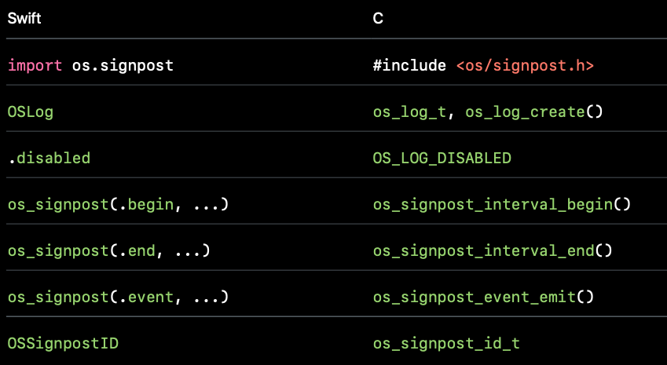

SignPost is part of the os_log family delivered by Apple for iOS10 and above. It allows developers to place performance-focused time markers which can be displayed in Instrument for visualization. Or we can say, SignPost APIs enable us add some lightweight instrumentation to code for collection and visualization by performance analysis tooling. Now, here comes two basic concepts in os_signpost APIs.
intervals: interesting periods of time.os_signpostinterval begin and end matching matching begins and ends is restricted to single threads.events: single points in time
Instruments
As I said, we can use it with signpost logs to
- Aggregate and analyze signpost data
- Visualize activity over time
Here comes a piece of code demonstrating how to use OSLog
1 | import os.signpost |
Signpost Names
- The string literal identifies signpost intervals
- The name must match at .begin and .end
Signpost IDs
Intervals with the same log handle and interval name can be in flight simultaneously. Signpost id is needed to correctly match begin signposts with end signposts. So we have to identify each interval with a signpost id.
- Use signpost IDs to tell overlapping operations apart
- While running,use the same IDs for each pair of
.beginand.end
1 | let spid = OSSignpostID(log: refreshLog) |
Making Signpost IDs
1 | let spid = OSSignpostID(log: refreshLog, object: element) |
- Signpost IDs are process-scoped
- Making from object is convenient if you have the same object at .begin and .end
Organizing Signposts: A Hierarchy
You can use subsystem, category and name to organize signposts.1
2log = OSLog(subsystem: "com.example.your-app", category: "RefreshOperations")
os_signpost(.begin, log: log, name: "Fetch Asset", signpostID: spid)
Custom Metadata in Signpost Arguments
You can add more data when calling os_signpost
- Add context to the .begin and .end
- Pass arguments with os_log format string literal
- Pass many arguments with different types
- Pass dynamic strings
- The format string is a fixed cost, so feel free to be descriptive!
1 | os_signpost(.begin, log: log, name: "Compute Physics", "%d %d %d %d", |
Signpost Events
1 | os_signpost(.event, log: log, name: "Fetch Asset", |
To add events between .begin and .end. They will become Points of Interest displayed in instrument later.
Signposts Are Lightweight
- Built to minimize observer effect
- Built for fine-grained measurement in a short time span
Enabling and Disabling Signpost Categories
1 | OSLog.disabled |
1 |
|
Signposts in C
Well, if you want to use os_signpost in C, Apple also provides a series of APIs for C.

Points of Interest
We may want to focus on timing of some important events. We can promote these events by using points of interest as the category of OSLog . Instrument then will look for this special category and display it in a separated sections.
We later can see these events displayed and correlate these events with other performance data.
In non-swift source code, we can use OS_LOG_CATEGORY_POINTS_OF_INTEREST. And use os_signpost(.event, ...) to emit import events.
1 | #ifndef __swift__ |
In Instrument, we can use Points of Interest template.
How to use it in Instrument
After opening the instrument, we can chose Logging template
Or we can add os_signpost here
What I like most in Instrument is that we can always zoom in and zoom out to select the region we interest.
Analysis time of the intervals
Choose summary:Intervals . We can see the summary of intervals. The count, duration, min duration, average duration, maximum duration of each signpost we collects.
Analysis the metadata
Summary:Metadata Statistics
Analysis Points of Interest
By choosing the Points of Interest section, we can see the points of interest and its meta data. Besides, we can use points of interst together with other section, like Time Profile to check how is the performance like when these importance events happen.
Options
The default recording mode is immediate, which means it records all the signposts immediately. This could bring overhead if your app emits thousands of signposts per second. However, we can still work around that by changing to window mode and only collecting data for the last 5 seconds. It is very useful to collect data to analyze stutters.
Steps:
long press the record button and select recording options
Expand
Grobal Options
- Choose
Last, filling 5 seconds.
When recording in Windowed Mode , the Instrument shows a blank white screen with a hint Recording in Windowed Mode.
When stoping recording, the Instrument showing a progress view and analyzing the collected data.
Ref
scan qr code and share this article